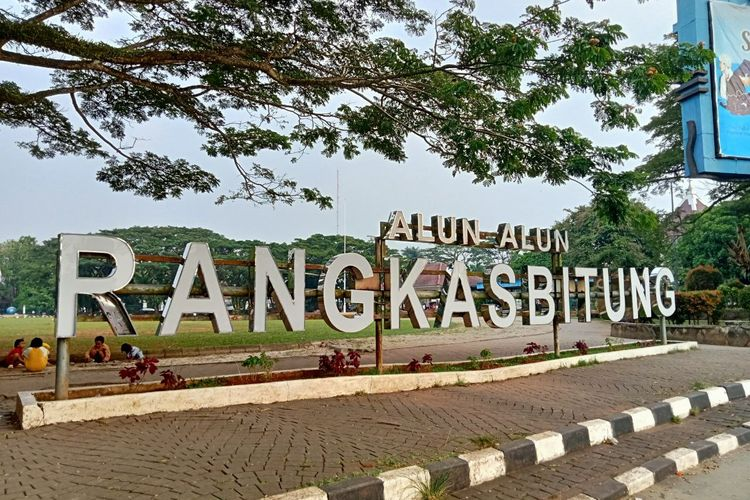

Ibukota Kabupaten Lebak
Alun-alun Rangkasbitung adalah pusat kota dan ruang terbuka yang menarik di Kabupaten Lebak, Banten, Indonesia. Tempat ini merupakan titik pertemuan utama masyarakat dan juga menjadi pusat aktivitas sosial dan budaya. Di sekitar alun-alun, Anda akan menemukan berbagai fasilitas seperti taman, tempat duduk, dan area bermain anak-anak. Alun-alun ini juga menjadi tempat untuk berbagai acara dan perayaan, seperti konser, pameran, dan kegiatan budaya lokal. Dengan suasana yang ramai dan beragam aktivitas, Alun-alun Rangkasbitung menjadi titik fokus yang mewakili kehidupan sehari-hari dan semangat komunitas di kota tersebut.